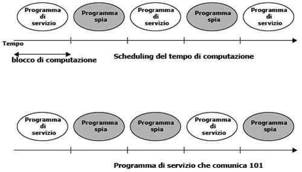

Torna alla pagina di Sicurezza & Privatezza
:: Appello d'esame di Sicurezza e Privatezza - 22/02/2006 ::
Domande
Rispondere brevemente ma in modo completo alle seguenti domande.
- Descrivere le caratteristiche principali di un virus polimorfo.
- Descrivere il funzionamento del canale coperto timing channel.
- Nell’ambito delle tecniche di autenticazione, descrivere lo smart token e il protocollo di autenticazione challenge-response.
- Nell’ambito delle politiche discrezionali, descrivere il modello a matrice di accesso.
- Nel caso in cui un sistema supporti sia autorizzazioni positive sia autorizzazioni negative, dire cosa si intende per inconsistenza e non completezza. Si richiede inoltre di descrivere come si possono risolvere questi problemi.
- L’attacco url confusion a che tipologia di attacco appartiene? In cosa consiste?
- Descrivere la procedura di crittazione di PGP.
- Cosa sono i certificati? Come possono essere classificati?
SOLUZIONE
1.
virus polimorfico: virus che è in grado di modificarsi e che quindi assume un numero illimitato di forme. Cambia casualmente i dati che lo compongono, quindi per essere polimorfo non deve cambiare solo una parte, ma deve modificarsi tutto. Non è sufficiente che utilizzi stringhe casuali se poi le inserisce sempre nella stessa posizione, altrimenti si potrebbe considerare come signature le parti che rimangono invariate.
2.
Un timing channel sfrutta la velocità con cui accadono certi eventi all'interno di un sistema. Si parte dal presupposto che la CPU viene regolarmente allocata tra un programma spia ed un programma di servizio. Il programma spia sfrutta questo presupposto per comunicare se il programma di sistema sfrutta o meno il tempo di computazione a disposizione. Se il tempo viene usato, il programma spia segnala un 1, altrimenti uno 0.
In realtà questo canale è complesso da implementare in sistemi multiutente in quanto sono presenti sicuramente più di due processi attivi contemporaneamente: il programma spia si deve sincronizzare a quello di servizio e far fronte ad eventuali interferenze.
Slide:

3.
smart token: dispositivo che gode di capacità di processo il cui funzionamento si basa su meccanismi statici e dinamici e sul challenge-response:
- aspetto statico: l'utente si autentica al token e il token si autentica al sistema (sono necessarie quindi due autenticazioni)
- aspetto dinamico: il token genera periodicamente nuove chiavi
challenge-response: è una "sfida" tra server e utente basata sul protocollo challenge response handshake e caratterizzata dalle seguenti fasi:
- il server di autenticazione stabilisce una sfida (challenge)
- il token genera la risposta (diversa per ogni sfida)
- l'autenticazione avviene con successo se la risposta è corretta
Il challenge response è resistente contro replay attack passivi, ma vulnerabile rispetto ad attacchi attivi(reflection attack) e man in the middle attack.
4.
Il modello a matrice di accesso è un sistema di protezione fondato sul concetto di stato di protezione che è definito dalla tripla (s,o,a) dove:
- S: insieme dei soggetti (righe della matrice)
- O: insieme degli oggetti (colonne della matrice)
- A: matrice di accesso formata dai soggetti e dagli oggetti e dove A[s,o] indica le azioni del soggetto s sull'oggetto o.
Lo stato di protezione può essere modificato tramite dei comandi primitivi:
- enter r into A[s,o]
- delete r from A[s,o]
- create subject S'
- destroy subject S'
- create object O'
- destroy object O'
L'implementazione del modello è complessa, in quanto la matrice è generalmente grande e sparsa. Per questa ragione si usano approcci alternativi alla memorizzazione sotto forma di array bidimensionale:
- tabella di memorizzazione: memorizza le triple (s,o,a) non nulle in una tabella di tre colonne
- ACL: memorizza per colonne. Ogni riga è una risorsa e ogni cella della colonna contiene la lista dei permessi per ogni utente
- Capability List: memorizza per righe. Ogni riga è un utente con una lista di operazioni consentite.
5.
L'uso combinato di autorizzazioni positive e negative conduce al problema di come le due autorizzazioni dovrebbe essere trattate nelle seguenti circostanze:
- non completezza: per un accesso non abbiamo né autorizzazioni negative né autorizzazioni positive
- Contromisure: la completezza può essere ottenuta assumendo di default una politica chiusa o aperta.
- inconsistenza: per un accesso ci sono sia autorizzazioni positive che negative
- Contromisure: non ha un'unica risposta perché è più difficile da trattare. Le soluzioni possibili dipendono dalle situazioni in cui ci troviamo e corrispondono a diverse politiche che possono essere implementate.
- denials take precedence: autorizzazioni negative vincono
- most specific takes precedence: l'autorizzazione più specifica vince
- most specific along a path takes precedence: l'autorizzazione più specifica vince solo sui cammini che passano dall'autorizzazione
- chinese wall: politica mandatoria che applica la separazione dinamica dei privilegi per prevenire flussi di informazione che possono causare conflitti di interesse tra gli utenti.
6.
L'URL confusion appartiene alla tipologia di attacchi masquerade cioè quando una macchina dichiara di essere una macchina diversa.
URL-Confusion: i nomi di dominio possono essere facilmente confusi (es: xyz.com viene mascherato con xyz.it)
Esempio: Cthulhu crea una pagina web simile a quella di una banca, invia una mail ad un certo numero di utenti con il link all'indirizzo del proprio sito, opportunamente mascherato (se l'indirizzo originale è www.banca.it l'indirizzo di Cthulhu sarà www.banca.com). L'utente inconsapevolmente si loggerà inserendo username e password al finto portale ed in questo modo Cthulhu gli avrà estorto dei dati che gli permetteranno di rubargli l'identità nel vero portale della banca e avvicinarsi sempre di più alla conquista del mondo muahahahahahaha IA IA CTHULHU FATGHA.
7.
8.
Un certificato digitale è un documento elettronico che attesta, con una firma digitale, l'associazione tra una chiave pubblica e l'identità del soggetto. Esso è garantito da una terza parte fidata nota col nome di Certification Authority (per gli amici CA). Essa rilascia un certificato digitale che contiene le informazioni dell'utente per cui rilascia il certificato, oltre alla chiave pubblica.
Il certificato lega il nome di un soggetto ad una chiave pubblica e per verificarne l'autenticità basta confrontarla con la chiave pubblica della CA.
Torna alla pagina di Sicurezza & Privatezza